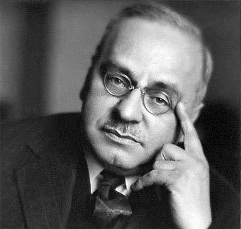

Quem foi Alfred Adler?
Adler nasceu em Penzing, uma espécie de subúrbio de Viena, em 7 de dezembro de 1870. Seus pais se casaram em Viena, porém sua mãe era húngara e seu pai nasceu em Burgenland, que antes de 1918 era parte da Hungria e, depois, passou a ser parte da Áustria. O pai de Adler era um comerciante de cereais e quando ele nasceu, sua família passava por um momento bom — economicamente falando. Sua infância foi marcada por diversas mudanças de residência, ora nos subúrbios ao oeste de Viena, ora ao sul. Segundo Carl Furtmüller (1968), esse período marcado por mudanças foi essencial para o desenvolvimento da personalidade de Adler.
Adler tinha raquitismo desde o seu nascimento, que o impediu de caminhar até os 4 anos. Além disso, desenvolveu uma pneumonia intensa que quase o levou à morte quando tinha 5 anos. Ele afirmou sentir angústia ao perceber que os seus irmãos (ele era o terceiro de 6 filhos) conseguiam correr, saltar e se mover praticamente sem grandes esforços, enquanto ele precisava se esforçar fortemente para andar.
Quando teve a crise de pneumonia, o médico que o atendeu comunicou ao pai que não teria mais o que ser feito, pois era um caso perdido. Contudo, ao sobreviver, considerou esse episódio como motivador para se formar em medicina.
Estrutura psíquica por Adler
Adler foi o primeiro a enfatizar a importância do elemento social no processo de readaptação do indivíduo e a levar a psiquiatria para a comunidade. Uma pesquisa da Review of General Psychology, publicada em 2002, classificou Adler como o 67º psicólogo mais eminente do século XX.
Em 1874 Francis Galton, um matemático britânico analisou uma amostra de cientistas ingleses e descobriu que a grande maioria era primogênito. Isso o levou a hipótese de que os primogênitos recebem um nível de atenção de seus pais que os permitem avançar intelectualmente. Por volta de 1920, o psiquiatra austríaco Alfred Adler formulou uma série de ideias e aplicações práticas que tem ajudado as pessoas a repensarem sobre a ordem do nascimento na dinâmica familiar.
Apesar de Adler ser conhecido por ter escrito sobre a ordem de nascimento, os seus estudos demonstram apenas probabilidades e não certezas. É provável que os primogênitos sejam mais dominantes e mandões, enquanto os filhos mais novos sejam conhecidos pelo seu carisma ou pelo esforço para superar o mais velho. É provável que o primogênito sinta que perdeu o trono quando um novo irmão ingressa na família. Usamos o termo ‘destronado’, para remontar a época histórica da realeza, que quando a primeira filha era do sexo feminino e nascia um segundo filho homem, de acordo com a hierarquia real o trono deveria ser ocupado não pela mulher primogênita, mas pelo primeiro homem da família. É provável que o primeiro e terceiro filho formem alianças contra o do meio, assim como o filho do meio se sinta pressionado e enxergue o mundo como injusto.
Além disso, os gêneros podem adicionar uma camada de complexidade na ordem de nascimento. Em culturas dominadas pelo machismo, a filha pode se sentir menosprezada por crescer num ambiente masculino. E por outro lado, um menino que cresce em uma família onde o universo é feminino, ele pode passar a vida provando a sua masculinidade. Porém, nada disso é uma certeza. Para entendermos mais profundamente a personalidade de cada criança, Adler sugere não olharmos simplesmente para a ordem de nascimento, mas sim para a dinâmica familiar, ou seja, o movimento que cada criança faz para encontrar um papel social dentro da família para se sentir aceito e importante dentro do seu contexto social.
Esse movimento é a conclusão da criança do que ela deve fazer para se sentir aceita e importante naquela família. Se, por exemplo, o filho mais velho é fraco academicamente, o filho mais novo busca se esforçar para ser o “mais inteligente”. Se a irmã age de forma rebelde, o irmão pode buscar assumir o papel de pacificador e bonzinho na família. Eva Dreikurs diz: “A área onde um obtém sucesso, o outro desiste. Onde um mostra fraqueza ou deficiências, o outro se supera para ter sucesso naquela mesma área.” Isso acontece porque a família é dinâmica e complexa, e a personalidade de cada filho na família pode ser moldada não só baseada na ordem de nascimento e nos valores de cada família, mas também na decisão individual que cada filho interpreta sobre a sua própria posição naquela família. Por isso, não há uma fórmula, mas apenas tendências de movimento que cada um toma para pertencer àquela dinâmica familiar, levando em conta que o movimento é determinado por alianças ou diferenças de temperamento, caráter, interesse ou habilidades. É o movimento para encontrar um lugar na família que a personalidade é desenvolvida.
No caso de gêmeos, as pessoas sempre perguntam quem nasceu primeiro, mas pouco provável esse seja o fator que determine a personalidade dos irmãos. A dinâmica familiar pode se dar por meio da competição ou do respeito pelas diferenças entre eles. Em uma família em que todos têm um senso de aceitação, os irmãos formam alianças e assumem papéis sociais saudáveis e construtivos. Em famílias, em que os irmãos não sentem que tem um lugar na família, os filhos competem em detrimento do outro para alcançar esse senso de aceitação. Isso reforça o ponto de que a personalidade é baseada nas decisões que cada criança toma para encontrar um lugar na família, ou seja, para se sentir aceito.
A ordem de nascimento não define a personalidade da criança, mas pode servir como um palco para que a criança tome as suas próprias conclusões a partir da visão pessoal sobre a dinâmica da sua própria família.


Algumas perguntas para autorreflexão:
- Qual a ordem de nascimento na sua família e como isso influenciou a sua personalidade?
- Que decisões você tomou sobre si mesmo, sobre os seus pais e seus irmãos (caso tenham algum) durante a sua infância?
- Quais eram os valores da sua família e como isso afeta a sua profissão?
- Quais são 3 valores de vida que você e seu cônjuge concordam em priorizar na sua família atual?